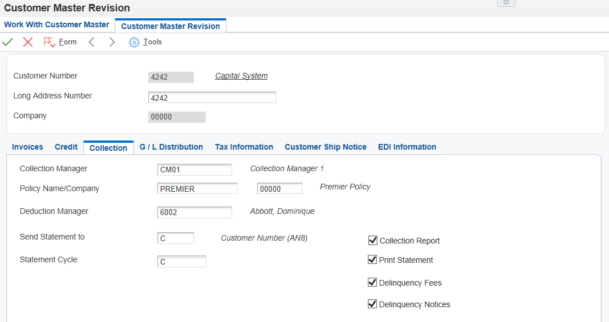
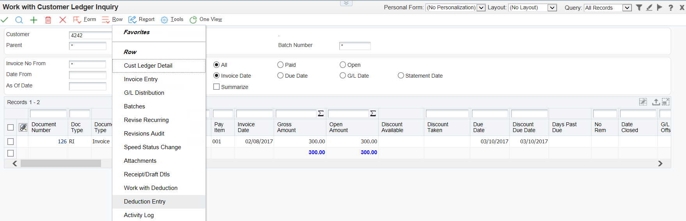
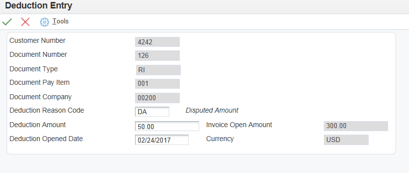
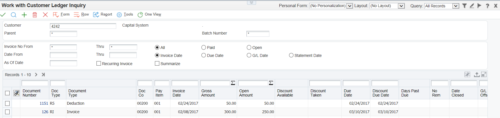
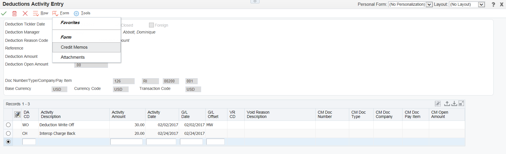
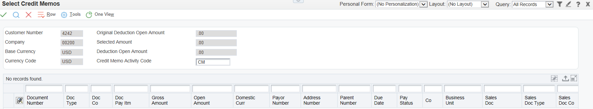

| Purpose |
| Overview of Deductions |
| Scope |
| Details |
| Process |
| Deduction Entry Methods |
| Deductions Associated with Invoices |
| Entering Deductions Associated with Invoices |
| Deductions Associated with Receipts |
| Entering Deductions Associated with Receipts |
| Researching and Resolving Deductions |
| Deduction Activity Code Setup |
| Applying an Activity Code to a Deduction |
| Applying a Credit Memo to a Deduction |
| Creating a Chargeback from an Invoice Deduction |
| Deleting and Voiding Activities and Deductions |
| Deleting/Voiding an Activity |
| Voiding a Deduction |
A deduction can be used in Accounts Receivable to record an underpayment made by a customer or a declaration from the customer that they intend to make an underpayment. A customer might reduce the amount of a payment for unknown reasons, or for reasons that might be associated with a specific invoice or a group of invoices, such as damaged goods. Deductions are usually taken by customers as compensation or for the lack of products or services. Some common reasons that a customer might take a deduction are:
This document is intended for users who are setting up and processing deductions in Accounts Receivable.
The following chart shows the process flow for deduction entry and processing:
Deductions can be entered from the customer ledger (P03B2002) at invoice level if the customer declares their intention to make a short payment, prior to payment being received. Deductions can also be entered during receipt entry to record the short payment and to allow research of the deduction at a later stage, whilst still registering receipt of the payment into the Accounts Receivable system. See How To Create, Delete, Void or Mark as NSF a Manual Receipt, Unapplied Cash Receipt, Speed Receipt or Negative Receipt (P03B102, P03B0001) for further information on entering a deduction during manual receipt entry.
When a deduction is taken against a specific invoice, the system closes that invoice and creates a new invoice (R5 document type) as a placeholder record for the deduction amount. While you research the issue related to a deduction, the open amount associated with the R5 invoice document is not available for receipt application. Deductions are included in the customer’s open balance and left open until they are resolved.
Depending on the internal procedures, you can specify who has the authority to process deductions. For example, the credit and collections department might require a deductions manager to resolve issues related to deductions. You can specify this information in the customer master record (P03013) on the 'Collections' tab, in the Deduction Manager field:

Once a deduction is entered and posted it is stored in the A/R Deduction Management table (F03B40). The deduction can then be researched for validity and to determine what action to perform to record the disposition in the Accounts Receivable system. For example, you might decide that the customer’s reason for a deduction is invalid. Therefore, you create a chargeback to re-invoice the customer for the deduction amount.
Researching an issue related to a deduction might consist of:
During research, you can record the activities that are administered against a deduction. To do this, you use the Deductions Activity Entry (P03B40) form to document the result of each activity. This provides an audit trail that shows how you processed the deduction. Research may result in the following actions being taken:
This will update the A/R Deduction Activity table (F03B41). When you resolve deductions, the system creates Receipt Detail records (F03B14) to close the R5 invoice records. You must post the receipt records that the system creates to update the appropriate general ledger accounts using the G/L Post (R09801).
A customer might reduce the amount of their payment for unknown reasons or for specified reasons relating to a particular invoice. For example, a customer might take a deduction for damaged merchandise, billing errors, or discount problems. Therefore, you must be able to research and process deductions so that you can resolve the issue with the customer and accurately account for the deduction in the JD Edwards EnterpriseOne Accounts Receivable system. Whether you generate the deduction at the time of receipt entry or from the Customer Ledger Inquiry (P03B2002) form, the functionality of deduction processing remains the same.
Depending on the type of deduction, you use one of these methods to enter and access information about deductions:
| Method | Usage |
|---|---|
| Customer Ledger Inquiry (P03B2002) | Use the Work with Customer Ledger Inquiry form to enter deductions for disputed items that are not associated with a short payment from a customer. These types of deductions are associated with an invoice, such as notification from the customer that goods are damaged prior to payment being made. |
| Receipts Entry (Standard Receipts Entry (P03B102)) | Use the Standard Receipts Entry form to enter deductions that are associated with customer receipts, on receipt of a short payment. See How To Create, Delete, Void or Mark as NSF a Manual Receipt, Unapplied Cash Receipt, Speed Receipt or Negative Receipt (P03B102, P03B0001). You can also use this method to create a standalone deduction, in which the deduction is not associated with a specific invoice. |
| Drafts Entry (P03B602) | Use one of the draft entry programs to enter deductions that are associated with customer drafts. See How To Set Up and Process Drafts In EnterpriseOne Accounts Receivable (P03B602, R03B671, R03B672, R03B680). You can also use this method to create a standalone deduction, in which the deduction is not associated with a specific invoice. |
Prerequisites
Before you enter deductions:
If a customer notifies you before payment about a problem with an invoice, you can access the Customer Ledger Inquiry form (P03B2002) to view the disputed item. Then, you can enter a deduction against the disputed item into the Deduction Management system. This informs the manager of the deduction so that they can research and resolve the deduction at a later time.
When you enter a deduction associated with an invoice:
After you enter a deduction, you must post the receipt batch to generate records in the A/R Deduction Management (F03B40) table so that you can review and resolve the deductions at a later time. After you enter and post deductions associated with invoices, you can review the reason code assigned to the disputed invoice on the Work With Deductions form.
To review the reason code, locate the disputed invoice on the Work With Customer Ledger Inquiry form and select 'Work with Deduction' from the Row menu.



When a customer reduces the amount of their payment, you can enter the amount by which the customer’s payment is reduced as a deduction. Many times, a customer does not include a reason for the reduction amount. In this case, you can apply the receipt accordingly and create a deduction in the JD Edwards EnterpriseOne Accounts Receivable system for the amount that the customer did not pay. You can associate the deduction with a specific invoice, if this information is known, or you can enter a standalone deduction if no invoice is specified.
When you enter a deduction associated with a receipt, the system does this:
To update the A/R Deduction Management (F03B40) table, you must post the receipt batch so that you can review and resolve the deductions at a later time.
See How To Create, Delete, Void or Mark as NSF a Manual Receipt, Unapplied Cash Receipt, Speed Receipt or Negative Receipt (P03B102, P03B0001) for details on entering a standard manual receipt with a deduction. Similar methods are used to enter drafts with deductions. See How To Set Up and Process Drafts In EnterpriseOne Accounts Receivable (P03B602, R03B671, R03B672, R03B680)
After entering a deduction, you must research the reason for the deduction and resolve it accordingly. For example, the deduction manager might contact the customer to determine whether the reason for the deduction is valid or whether additional information is needed before assigning a disposition to it. If a deduction requires further research or action, you can enter a tickler date.
You can change the details related to deductions or to posted or unposted activities. When you make a change, the system logs it on the Deductions Activity Entry form.
After researching a deduction, you must determine which action to perform to resolve the problem. To do this, you might use one of the following resolutions.
| Action | Resolution |
|---|---|
| Request Additional Information | With this resolution method, you do not specify an amount when assigning the resolution activity code. The associated invoice remains closed and the system leaves the amount of the deduction open in the Deduction Management system so that you can resolve it after you receive the requested information. |
| Write Off the Deduction | When you write off the deduction, the system closes the open amount of the R5 invoice deduction record and generates an unposted receipt record in the F03B14 table in a new batch. When you post, the system updates the balance of the write-off account specified by the RAxx AAI (where xx equals the write-off reason code). The system posts the offset to the account specified by the RN AAI. When you resolve a deduction with a write-off, the system does not use the tolerance limits established in the Standard Receipts Entry processing options. The system uses the value in the G/L Offset field for the write-off reason code. When you complete the DA CD field on the Deductions Activity Entry form, the system uses the value from the Write-off Reason Code field as the default value for the G/L Offset field. However, you can override the value in this field. To retrieve the AAI that the write-off activity uses, the system concatenates RA and the value in the G/L Offset field in the detail area. This value is stored in the F03B14 table. The system stores the reason code for the write-off in the Deductions Activity Master table (F03B42). Each deduction activity must have a deduction activity code assigned to it. Each deduction activity code can have its own write-off reason code associated with it. Thus, all deduction activities with the same deduction activity code might have the same write-off reason code. |
| Create a Chargeback | When the deduction is resolved as a chargeback to the customer, the system closes the open amount of the R5 invoice deduction record and generates a new RB invoice document. The system generates an unposted record in the F03B14 table in a new batch. When you post the chargeback, the system updates the appropriate A/R trade account specified by the RCxx AAI (where xx equals the value of the chargeback reason code) and the deduction trade account associated with the RN AAI. The system uses the value in the G/L Offset field as a chargeback G/L offset value. When you complete the DA CD field on the Deductions Activity Entry form, the system uses the value from the Chargeback Reason Code field as the default value for the G/L Offset field. However, you can override the value in this field. To retrieve the AAI that the chargeback activity uses, the system concatenates RC and the value for the chargeback G/L offset. This value from the G/L Offset field is stored in the F03B14 table. The system stores the reason code for a chargeback or write-off in the F03B42 table. Each deduction activity must have a deduction activity code assigned to it. Each deduction activity code can have its own chargeback reason code associated with it. Thus, all deduction activities with the same deduction activity code might have the same chargeback reason code. |
| Create an Unearned Discount | When you create an unearned discount, the system closes the open amount of the R5 invoice deduction record and generates an unposted record in the F03B14 table in a new batch. When you post the receipt, the system updates the account balance associated with the RKD AAI for the discount amount and the RN AAI for the deduction offset. |
| Apply a Credit Memo to the Deduction | If a credit memo exists for the customer, you can apply one or more credit memos to the deduction and reduce the amount of the credit memo by the total or partial amount of the deduction. The system generates two records in the F03B14 table: one for the amount of the deduction and one for the amount of the credit memo. When you post these records, the system creates the proper accounting offset entries to the A/R trade and deduction offset accounts. |
| Reverse the Deduction | When you deny a deduction, you reverse it. For example, this might occur when you generate a deduction for 100.00 because the customer was not shipped 100.00 worth of goods, but the deduction manager has evidence that the entire amount of goods was shipped. Reversing the deduction reopens the invoice for the amount of the activity. This amount can be the entire amount of the deduction or a partial amount. If the reversal is entered in error, void the activity. You cannot reverse a standalone deduction because there is no invoice associated with it. You must void it. |
| Void the Deduction | You void a deduction when you enter one in error. When you void a deduction, the system reopens the invoice and the full amount of the invoice must be paid. See section below on voiding a deduction. |
See Overview and Setup of Accounts Receivable Automatic Accounting Instructions (P0012) for further information on the AAI setup required for the AAIs outlined above.
Batch Considerations for Processing Deductions
When you apply activity codes to the deduction invoice records (R5), the system creates F03B14 records that you must post. The system creates the receipt records in a receipt batch (batch type RB). Just like other receipt batches, you must exit the deduction application (P03B40) completely, or the batch remains in an 'In Use' status and is unavailable for posting.
Prerequisite
Verify that the appropriate deduction activity codes are set up in the Deduction Activity Master (P03B42). See section below.
Before researching and resolving a deduction, you can set up additional activity codes to specify which type of activity the system uses to resolve the deduction.
The JD Edwards EnterpriseOne Accounts Receivable system provides default activity codes. However, you might want to set up additional codes that meet organization-specific needs. For example, you can set up additional activity codes for write-offs to correspond with specific write-off reason codes.
You can use activity codes to:
The system uses codes to assign an action to the deduction. Each action creates a record in the F03B41 table. The system stores deduction activity codes in the F03B42.


It is possible to apply a credit memo to a deduction, if a credit memo has been created to credit a customer's account for damaged goods for example and you need to close a pending deduction relating to this issue. A credit memo can only be applied to a deduction if the company and currency are the same on both the credit memo and deduction.


This is a detailed overview of the records created and the changes that occur when creating a chargeback from a deduction associated with an invoice.
The following example illustrates the creation of an invoice and the processing of a deduction.
1. Create the Invoice and Deduction
Use Standard Invoice Entry (P03B2002) to create an unposted invoice for $100.00 for Customer 92277. In the G/L Distribution screen, the revenue account for explanation purposes is 3.5010 (Store Sales).
After the invoice is created, find it in Standard Invoice entry, then select the Deduction Entry (P03B40) row exit. Enter the Deduction Reason Code, Deduction Amount of $40.00, and Deduction Opened Date and click OK.
Completing the required Deduction Entry fields results in:
2. Post the Receipt Batch Containing the Deduction
From Receipts Journal Review (P0011) on the Customer Invoice Entry menu (G03B11), post the batch (Batch Type RB) that contains the receipt records created by the deduction. The invoice (R5) record will not be changed.
Note the changes to significant F03B13 fields:
Note the changes to significant F03B14 fields:
An A/R Deduction Management (F03B40) record is created. Note the values of these significant fields:
Records are created in the F0911 to record the deduction on the General Ledger.
3. Work the Deduction
Once the batch that includes the R5 document is posted, select A/R Deduction Processing (P03B40) on the Manual Receipts Processing menu (G03B12) to access the newly created record in the F03B40. Select the deduction record to access the Deductions Activity Entry screen to resolve the deduction. In this case, the resolution will be a chargeback, although other options include write-offs and unearned discounts.
Using Visual Assist in the "DA CD" column, choose the deduction activity code (stored in the Deductions Activity Master (F03B42) table). Once an activity code is selected, the remaining columns in the grid detail of the Deduction Activity Entry screen such as Activity Amount, Activity Date, G/L Date, and G/L Offset should default as the user tabs through the line item. This information should be provided by records created in earlier steps. Click OK. The following occurs:
4. Post the New Batch Created by Working the Deduction
After using P03B40 to work the deduction, the newly created F03B11 RB document exists in a new batch. The RB record can be misleading because it has a POST value of D that indicates the record has been posted to the G/L. The new batch still needs to be posted. Posting the batch creates posted AE and RS documents in the F0911. Before and after this posting, the RB document is available to be matched to new receipts.
5. Closing Considerations
Please note the following:
You can delete/void activities if you assign an activity to the deduction in error. If the activity is unposted, it can simply be deleted. However, if it has been posted it needs to be voided. In this case the system creates an unapplied receipt for the amount of the deduction when you use the void function.
If a deduction is created in error, it needs to be voided as the transaction has already been posted to create the entry in the F03B40. Again the system creates an unapplied receipt for the amount of the voided deduction.
Access the Deduction Activity Entry form (P03B40).
To delete/void an activity: